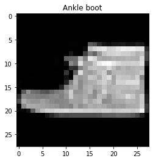
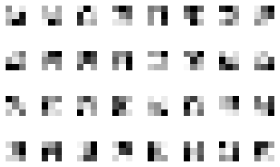

**This is from a UC Berkeley course project, so the source code is not publicly viewable. If you are an employer interested in viewing my project code, please contact me privately.**
This project used the Fashion MNIST dataset, a collection of 70,000 images of fashion items separated into 10 categories: T-shirt/top, Trouser, Dress, Coat, Sandal, Shirt, Sneaker, Bag, and Ankle boot. The input images were 28x28 pixel grayscale images, which were normalized to [0.0,1.0] floats as preprocessing. The dataset was split into 60,000 training images and 10,000 test images, with a 0.8/0.2 train/validation split (the 60,000 image training set was further divided into 48,000 training images and 12,000 validation images). The test set was used to evaluate the final performance of the model while the validation image was used for hyperparameter tuning, and when compared to the training loss/accuracy, could help determine if overfitting was occuring. I used a batch size of 100.
Examples from the Fashion MNIST dataset:
|  | |
|
|
Basic network architecture:
(conv1): Conv2d(1, 32, kernel_size=(3, 3), stride=(1, 1))
(conv2): Conv2d(32, 32, kernel_size=(3, 3), stride=(1, 1))
(fc1): Linear(in_features=800, out_features=128, bias=True)
(fc2): Linear(in_features=128, out_features=10, bias=True)
A summary of the optimal hyperparameters I found: 2 convolutional layers with 32 channels (size 1 input size is because we are using grayscale images which only have 1 color channel) and 3x3 convolutional kernels with a stride of 1 in both directions. The ReLU activation function and a 2d max pooling operation with size (2, 2) was performed on both convolutional layers, the resulting vector was flattened, and then send through 2 fully connected layers to reduce the output into a one dimensional vector of length 10, the number of categories. The optimizer was Adam with a learning rate of 0.0005 and the loss function was cross entropy. I trained the network for 20 epochs. Each of the 10 output values per image represented the learned probability that the image is an example of the corresponding category, so I took the label with the highest probability.
Learned 3x3 Filters
| Category | Validation Accuracy | Test Accuracy | Examples of Correctly and Incorrectly Classified Image for Category |
| T-shirt/top | 89 % | 88 % | |
| Trouser | 97 % | 97 % | |
| Pullover | 88 % | 87 % | |
| Dress | 92 % | 93 % | |
| Coat | 84 % | 85 % | |
| Sandal | 97 % | 97 % | |
| Shirt | 66 % | 64 % | |
| Sneaker | 96% | 95% | |
| Bag | 98 % | 94 % | |
| Ankle boot | 97 % | 96 % |
The class with the lowest classification accuracy by far was Shirt, as images from that class often looked very similar to T-shirt/top. The next hardest class was Coat, which is another top item that looked similar to the previously mentioned two top garments. While there were also 3 similar kinds of footwear (sandal, ankle boot, and sneaker), those are more differentiable than the tops by features such as ankle height and amount of negative space. An interesting observation is that many of the shoe images were had the toe on the left side and the heel on the right side of the image, so shoes that were facing the opposite direction were often classified incorrectly. Classes like bag, dress, and trouser were very different from other classes and therefore had relatively higher accuracy.
Overall accuracy results:
Accuracy of the network on the training images: 93 %
Accuracy of the network on the validation images: 90.58333333333333 %
Accuracy of the network on the test images: 90.27 %
This part used the Mini Facade dataset with the goal of performing semantic segmentation on images of building facades, labeling each pixel as belonging to one of 5 categories: facade, pillar, window, balcony, or other.
Conv2d(3, 16, kernel_size=(3, 3), stride=(1, 1))
BatchNorm2d(16, eps=1e-05, momentum=0.1, affine=True, track_running_stats=True)
ReLU(inplace=True)
MaxPool2d(kernel_size=(2, 2), stride=(2, 2), padding=0, dilation=1, ceil_mode=False)
Conv2d(16, 32, kernel_size=(3, 3), stride=(1, 1))
ReLU(inplace=True)
MaxPool2d(kernel_size=(2, 2), stride=(2, 2), padding=0, dilation=1, ceil_mode=False)
Conv2d(32, 64, kernel_size=(3, 3), stride=(1, 1))
ReLU(inplace=True)
MaxPool2d(kernel_size=(2, 2), stride=(2, 2), padding=0, dilation=1, ceil_mode=False)
Conv2d(64, 128, kernel_size=(3, 3), stride=(1, 1))
ReLU(inplace=True)
MaxPool2d(kernel_size=(2, 2), stride=(2, 2), padding=0, dilation=1, ceil_mode=False)
Conv2d(128, 2048, kernel_size=(3, 3), stride=(1, 1))
ReLU(inplace=True)
MaxPool2d(kernel_size=(2, 2), stride=(2, 2), padding=0, dilation=1, ceil_mode=False)
ConvTranspose2d(2048, 5, kernel_size=(3, 3), stride=(1, 1))
Upsample(scale_factor=32.0, mode=bilinear)
The model I used first consisted of 5 convolutional layers of increasing size, up to 2048 channels, with kernel size (3, 3), each followed by ReLU and 2D max pooling with a stride and kernel size of 2. Batch normalization was performed after the first conv layer. Next, the deconvolution part of the net used a ConvTranspose2d layer and upsampling by a factor of 32 to match the dimensions of the original. The input to the net was the RGB 256 by 256 pixel image, a tensor of shape (3, 256, 256). The output was a tensor of values for each of the classes for each pixel of the image, of shape (5, 256, 256).
I used the Adam optimizer with a learning rate of 10e-5 and weight decay of 10e-6, and cross entropy loss. I trained the network for 60 epochs when I began to see overfitting (even though training loss continued to decrease, validation loss began to plateau and even increase). The dataset was divided into 906 images for the training set, of which 182 (about 20%) were used for validation, and a test set consisted of 114 images.
Average Precision
| Class | Color | AP |
| others | black | 0.4592752863557226 |
| facade | blue | 0.5224833502991951 |
| pillar | green | 0.07389729828011496 |
| window | orange | 0.3287960624729232 |
| balcony | red | 0.32513651168491847 |
| Average | N/A | 0.3419177018185749 |
Average precision was used as the metric for evaluating performance of the network. The network did much better on the classes that were more represented in the images (in terms of both frequency within the dataset and relative area within images), such as facade and others. In contrast, the network had very poor performance on the pillar class, which were often very skinny portions of the images and often did not occur in the training examples.
| Input Image | Ground Truth Labels | Predicted Labels |
|
|
|
|

|
|
|
|
|
|
|
As you can see by these good, bad, and example from my collection, the network's performance was not optimal. As expected, it very incorrectly classified the pillar (green) category, while the facade (blue) and window (orange) categories were better. Overall, the predicted labels had large swaths of color instead of fine detail, as exemplified by how the net struggled with the second example.